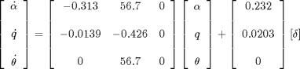
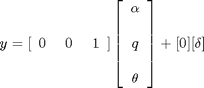
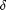
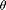
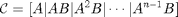
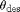
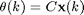
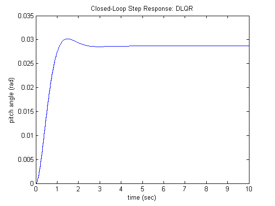
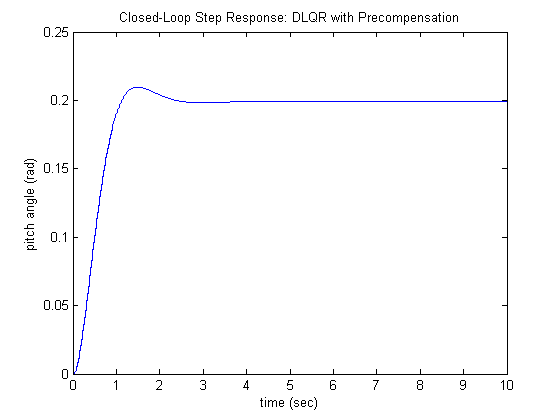

Aircraft Pitch: Digital Controller Design
Key MATLAB commands used in this tutorial are: ss , c2d , rank , ctrb , dlqr , lsim , stairs
Contents
In this page, we will consider the digital version of the aircraft pitch control problem. A sampled-data version of the airplance pitch dynamics can be obtained from the continuous model, as we will describe. In this example we will apply state-space techniques to design the controller.
From the Aircraft Pitch: System Modeling page, the continous-time state-space model of the aircraft pitch dynamics was derived as
(1)
(2)
where the input is elevator deflection angle  and the output is the aircraft pitch angle .
For a step reference of 0.2 radians, the design criteria are the following.
- Overshoot less than 10%
- Rise time less than 2 seconds
- Settling time less than 10 seconds
- Steady-state error less than 2%
Discrete state-space
The first step in the design of a digital control system is to generate a sampled-data model of the plant. MATLAB can be used to generate this model from a continuous-time model using the c2d command. The c2d command requires three arguments: a system model, the sampling time (Ts) and the type of hold circuit. In this example we will assume a zero-order hold (zoh) circuit. Refer to the Introduction: Digital Controller Design page, for further details.
In choosing a sample time, note that it is desired that the sampling frequency be fast compared to the dynamics of the system in order that the sampled output of the system captures the system's full behavior, that is, so that significant inter-sample behavior isn't missed. One measure of a system's "speed" is its closed-loop bandwidth. A good rule of thumb is that the sampling time be smaller than 1/30th of the closed-loop bandwidth frequency.
From the closed-loop Bode plot, the bandwidth frequency can be determined to be approximately 2 rad/sec (0.32 Hz). You may verify this yourself. Thus, to be sure we have a small enough sampling time, we will use a sampling time of 1/100 sec/sample. Now we are ready to use the c2d function. Enter the following commands in an m-file. Running this m-file in the MATLAB command window gives you the following four matrices representing the sampled-data state-space model.
A = [-0.313 56.7 0;
-0.0139 -0.426 0;
0 56.7 0];
B = [0.232;
0.0203;
0];
C = [0 0 1];
D = [0];
sys_ss = ss(A,B,C,D);
Ts = 1/100;
sys_d = c2d(sys_ss,Ts,'zoh')
sys_d =
a =
x1 x2 x3
x1 0.9968 0.5649 0
x2 -0.0001385 0.9957 0
x3 -3.931e-05 0.5658 1
b =
u1
x1 0.002374
x2 0.0002024
x3 5.744e-05
c =
x1 x2 x3
y1 0 0 1
d =
u1
y1 0
Sample time: 0.01 seconds
Discrete-time state-space model.
Now we have obtained the discrete-time state-space model shown below.


Controllability
As was the case in the continuous case, before we can design our controller we must verify the controllability of the system. For the system to be completely state controllable the controllability matrix must have rank n where the rank of a matrix is the number of independent rows (or columns). The controllability matrix of a discrete-time system has the same form as a continous-time system.
(3)
Since our controllability matrix is 3x3, its rank must be 3. The MATLAB command rank can calculate the rank of a matrix for you. Adding the following additional commands to your m-file and running in the MATLAB command window will produce the following output.
co = ctrb(sys_d); Controllability = rank(co)
Controllability =
3
Therefore, our system is completely state controllable since the controllability matrix has rank 3.
Control design via pole placement
The schematic of a discrete full-state feedback control system is shown below, where q-1 is the delay operator (not the aircraft's pitch rate q). Note that it is assumed that D = 0.

where
- K = control gain matrix
- x = [ alpha, q, theta ]' = state vector
- theta_des = reference (r)
- delta = theta_des - K x = control input (u)
- theta = output (y)
Referring back to the state-space equations at the top of the page, we see that substituting the state-feedback law (k) = (k) - K x(k) for (k) leads to the following where we will assume that all of the state variables are measured.
(4)
(5)
In the continuous Aircraft Pitch: State-Space Methods for Controller Design page, the Linear Quadratic Regulator (LQR) method was used to find the control matrix (K). In this digital version, we will use the discrete version of the same LQR method. This type of control technique optimally balances the system error and the control effort based on a cost that the designer specifies that defines the relative importance of minimizing errors and minimimizing control effort. In the case of the regulator problem, it is assumed that the reference is zero. Therefore, in this case the magnitude of the error is equal to the magnitude of the state. Please consult your control textbook for details. To use this LQR method, we need to define two parameters: the state-cost weighted matrix (Q) and the control weighted matrix (R). For simplicity, we will choose the control weighted matrix equal to 1 (R=1), and the state-cost matrix (Q) equal to pC'C. Employing the vector C from the output equation means that we will only consider those states in the output in defining our cost. In this case, is the only state variable in the output. The weighting factor (p) will be chosen by trial and error in order to modify the step response to achieve our given requirements. In this case, R is a scalar since we have a single input system.
Now we are ready to find the control matrix (K) employing the MATLAB command dlqr which is the dicrete-time version of the lqr command. We will choose a weighting factor p equal to 50, as determined in the continuous Aircraft Pitch: State-Space Methods for Controller Design page, Add the following commands to your m-file and run it in the MATLAB command window. Note that in the following we are overwriting the values of the state-space matrices A, B, C, and D with their discrete-time equivalents using the model derived with the c2d command above.
A = sys_d.a; B = sys_d.b; C = sys_d.c; D = sys_d.d; p = 50; Q = p*C'*C R = 1; [K] = dlqr(A,B,Q,R)
Q =
0 0 0
0 0 0
0 0 50
K =
-0.6436 168.3611 6.9555
Note the structure of the weighting matrix Q and the resulting gain matrix K. Referring to the closed-loop state equations given above assuming a control law with non-zero reference, (k) = (k) - K x(k), we can then generate the closed-loop step response by adding the following commands to your m-file and running it in the MATLAB command window. The stairstep response shown below should then be generated.
time = 0:0.01:10; theta_des = 0.2*ones(size(time)); sys_cl = ss(A-B*K,B,C,D,Ts); [y,t] = lsim(sys_cl,theta_des); stairs(t,y) xlabel('time (sec)'); ylabel('pitch angle (rad)'); title('Closed-Loop Step Response: DLQR');
Examination of the above demonstrates that the rise time, overshoot, and settling time are satisfactory. However, there is a large steady-state error. One way to correct this is by introducing a precompensator (Nbar) to scale the overall output.
Adding precompensation
Unlike other design methods, the full-state feedback system does not compare the output to the reference; instead, it compares all states multiplied by the control matrix (K x) to the reference (see the schematic shown below). Thus, we should not expect the output to equal the commanded reference. To obtain the desired output, we can scale the reference input so that the output does equal the reference in steady state. This can be done by introducing a precompensator scaling factor called Nbar. The basic schematic of our state-feedback system with scaling factor (Nbar) is shown below.

Unfortunately, we can not use our user-defined function rscale.m to find Nbar because it is only defined for continuous systems. We can, however, find the correct scaling by trial and error. After several trials, it was found that Nbar equal to 6.95 provided a satisfactory response. Modify your m-file as shown below. Running your m-file at the MATLAB command line will then generate the stairstep response shown below.
Nbar = 6.95; sys_cl = ss(A-B*K,B*Nbar,C,D,Ts); [y,t] = lsim(sys_cl,theta_des); stairs(t,y) xlabel('time (sec)'); ylabel('pitch angle (rad)'); title('Closed-Loop Step Response: DLQR with Precompensation');
From this plot, we see that the Nbar factor eliminates the steady-state error. Now all design requirements are satisfied.